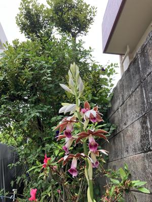
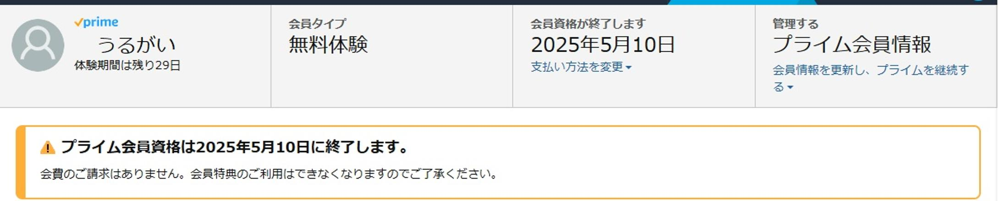
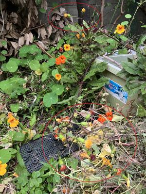

うるがいの話 ある日
最新: アマゾンプライム【うるがいの話 ある日】とは 一日だけのプログです
『うるがいの話』の最新一日だけのプログで、通信料が少なく経済的だ。カニの画像をクリックすると全ての日付が載る『うるがいの話』サイトを表示します
|
|
【うるがいの話】 うるがい(ｳﾙｶﾞｲ urugai)とは、『もずくがに』の名前でとても大きくなります。 |
|---|---|
|
|
【カミマヤーの話】 猫のことを方言でマヤーといいます。カミマヤー（kamimayaa）とは、神の猫のことです。 |
|
【たながぁの音楽】 たながぁ（ﾀﾅｶﾞｰ tanagaa）とは手長えびのことで、何種類かあり大きいのは車 エビぐらいになります。 |

|
【ぶながぁの話】 ぶながぁ(ﾌﾞﾅｶﾞｰ bunagaa)とは、赤い髪の毛、赤い身体、そして身長は１ｍ２０ｃｍ ぐらい、川の蟹を食べているの目撃された。場所は沖縄県国頭郡大宜味村のと ある村僕の隣近所に住んでいる爺さんから、聞いた話です。 |
|
|
【ギーマの話】 ギーマ(giima)とは、山原の里山に咲くスズランに似た、 花を付けます。実は食べられます、 気が付くと口の周りが紫になっています。 |
2025年04月13日 (日）アマゾンプライム
16:17

干したバタフライピーティーが、残り少なかった。あと１０日もも
たないかもと、アマゾンでティーバッグ（０．５×３０包）を注文
する。配送料がない？、あれと思ったが、マ、いいかとそのまま注
文した。しばらくすると、アマゾンプライムの会員になりましたと
メールが来た。え！！、そうか、旅行のボケがまだ・・・、直ぐさ
ま解約手続きをする。『会員のご請求はありせん』とある、ホっと

しかし、速攻配達注文した翌日には商品を手にすることができた。
恐るべき、ただね、会員費用まで払っては・・・。
さて、家のバタフライピーティーはいつから利用できるのだろう。
去年のプログをみると５月１日に花が咲いている。￥１，４９７円
の製品の費用、プラス配達料５百円、ウーン、もったいない。去年
は、９月から家のバタフライピーティーを使い始めた。今年は、早
めに保存作業を始めることにしよう。
目にいいと言うのでハンダマの野菜を植えたが、食べずに放置して
いたら、タンポポみたいな花をつけた。ウーン、どうしよう。
